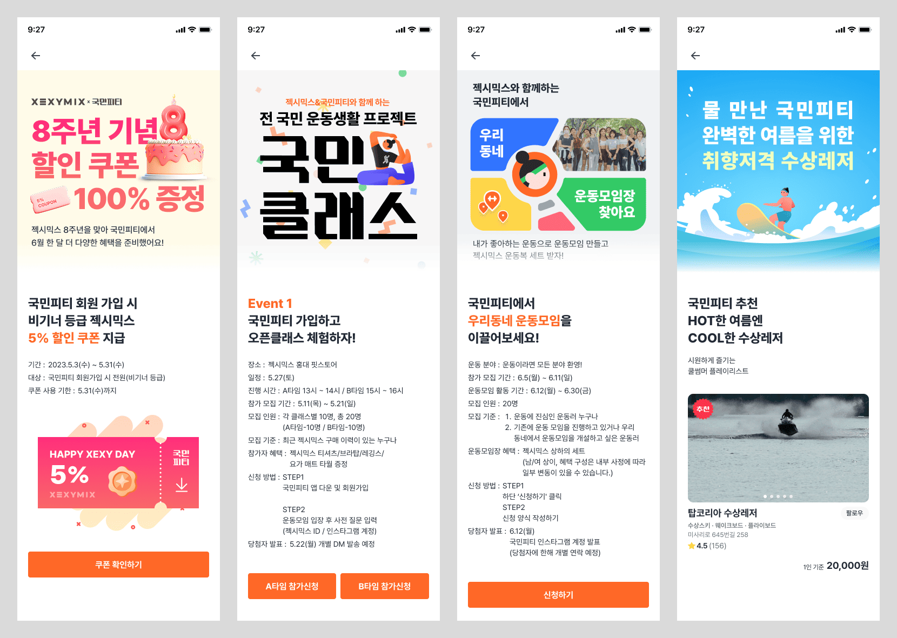

국민피티 웹뷰
2021.07 - 2023.10

📌 Summary
업데이트가 잦은 앱 화면(웹뷰)과 앱 미설치 고객이 상품 공유 링크를 통해 바로 접근할 수 있는 웹 공유용 랜딩 페이지
- •딥링크(Deeplink)를 사용하여 앱 설치 고객은 앱 내 화면으로, 미설치 고객은 랜딩 페이지로 유도
- •React Query를 도입하여 UI와 비즈니스 로직을 분리시켜 코드의 가독성과 유지보수성 향상
- •앱 내 업데이트가 많은 화면을 웹뷰로 제작하여 사용자 경험 강화
🤔 Background
- 기존에는 앱 내에서 센터나 강사를 공유할 수 있는 기능이 있었지만, 앱을 설치한 사용자만 이 기능을 이용할 수 있었습니다. 이로 인해 앱을 미설치한 고객의 이탈률이 높아지는 문제가 발생했습니다.
- 서버 상태 관리 로직이 UI 컴포넌트와 결합되어 코드가 복잡해지고, 서버 데이터가 변경될 때 클라이언트 상태와의 일관성을 맞추는 작업이 번거로웠습니다.
- 국민피티는 모바일 앱을 통해 제공되는 서비스로, 변경이 빈번한 화면을 앱으로 구현하면 앱 심사 과정이 길어짐에 따라 정확한 시간에 맞춰 시작해야 하는 미션, 이벤트 기능의 시작 일시가 지연되는 문제가 발생했습니다. 따라서 이러한 화면을 웹뷰로 구현할 필요성이 생겼습니다.
🔍 Meaning
•앱 미설치 고객을 위한 랜딩 페이지 및 딥링크 구현
- 앱 미설치 고객을 위한 랜딩 페이지를 새로 구현하였고, 랜딩 페이지에서 앱 설치 여부에 따라 분기하는 기능을 구현하기 위해 딥링크를 학습했습니다. 안드로이드와 iOS에서 각각 앱링크와 유니버셜 링크를 사용하여 딥링크를 구현했습니다.
•React Query를 도입하여 UI와 비즈니스 로직을 분리
- React Query를 도입하여 서버 상태를 UI와 분리하고, 데이터를 요청하는 로직을 컴포넌트 외부로 분리시켰습니다. 또한 React Query를 사용하여 서버 상태를 자동으로 동기화하고, 로컬 상태와 일관성을 유지하면서 데이터 변경 시 UI를 즉시 업데이트할 수 있도록 하여 유지보수성과 확장성을 향상시켰습니다.
•웹뷰 구현 및 앱과의 데이터 연동
- 자주 업데이트되는 화면을 웹뷰로 구현하고, 웹뷰와 앱 간의 데이터 전달 및 동일한 기능(토스트 팝업, 얼럿, 화면 열기/닫기 등)을 지원하기 위해 앱팀과 협업하여 필요한 action과 데이터 타입을 정의했습니다. 이를 통해 앱 내에서 웹뷰의 기능을 원활하게 연동할 수 있었습니다.
👩🌾 Responsibilities
기여도 : 60%
- •센터, 강사, 마이 공유용 랜딩 페이지
- •선물함, 쿠폰함, 등급 관리, 미션 관리, 혜택 살펴보기(웹뷰)
🔨 Technology Stack(s)
- React
- Typescript
- Next.js
- Redux
- Redux-saga
- Styled-components
- React-query